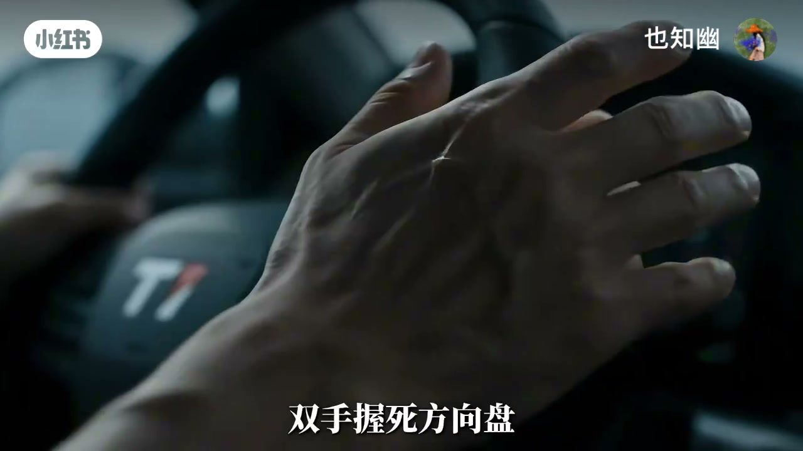
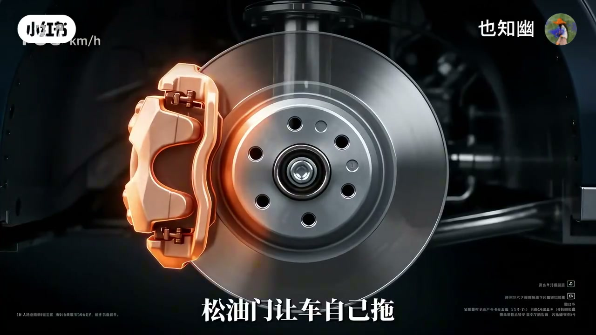
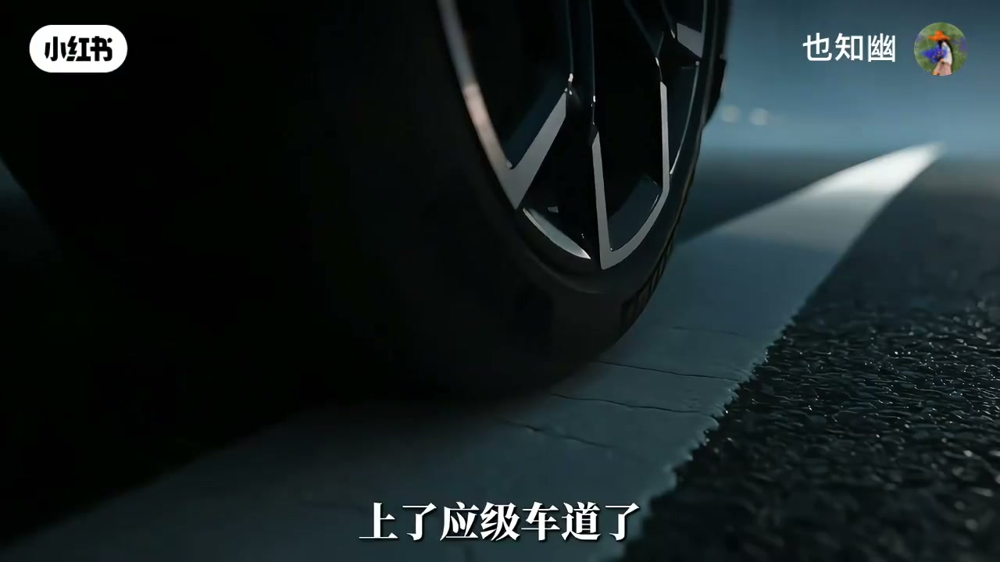
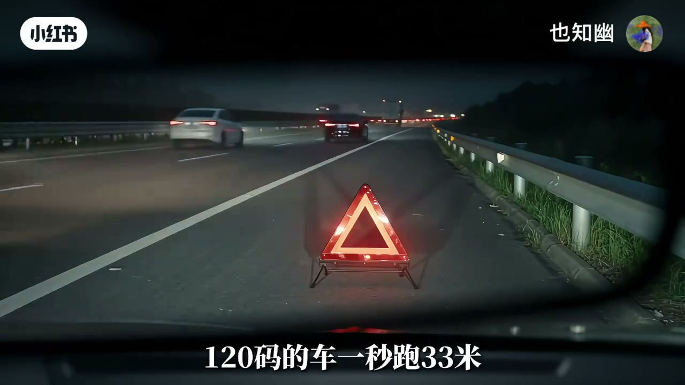

内容要点
也知幽用学员－师傅对话演示：高速上整块布糊满挡风玻璃时，本能的雨刮、急打方向、一脚死刹都可能要命。正确顺序是握死方向盘先稳住、双闪告知后车、松油门再轻刹降到大约能靠边的速度、确认后再慢并应急道，停稳后最危险——三角牌约 200 米、打 122。收束八步：握盘、双闪、松油、轻刹、看镜、靠边、放牌、报警。内容为视频教学观点，非法规条文替代。
知识结构
勿雨刮掀布、勿急打、勿死刹追尾。
握盘跟直；双闪＋松油轻刹买时间。
确认右后方无车，慢并应急道。
200 米牌＋报警；八步不能跳。
视线被挡时，保命靠「先稳车再买时间」：握盘双闪松油轻刹，确认后慢靠边，牌放够远再报警——慌比布更挡脑子。
00:00-00:50三种本能为什么都不行
布糊满看不见：碰雨刮——120 码风压把布按死，雨刮掀不起边；打方向躲——高速急打等于自己翻车；踩死刹车——后车大货贴屁股，一脚死刹它刹不住就追尾挤成铁盒。
正确起点：双手握死方向盘，先稳住，别的先别动。00:20 握盘特写。

00:50-01:43看不见也要直；双闪松油轻刹
不动≠傻等：要告诉后车「我有问题」。你不需要看见路，需要直——车知道直，不乱打就沿车道；方向盘九点三点能感到回正力，跟它别扛。
双闪开→松油门让车自己拖，再一点点轻刹：轻踩给后车反应时间，踩死它没有。先稳在约 80 左右，够找空档靠边。01:30。

01:43-02:18确认后慢并应急道
看中间后视镜再看右边，确认没车、再看一遍，打右转向，现在才动方向——轻一点点，慢就是稳。上应急道一直滑到护栏边。停稳前别解安全带。02:05。

02:18-03:13停车后最险：200 米牌与八步
停了才最危险：应急道窄，车贴着过，开门就撞、下车就卷。三角警示牌是关键——约 200 米；120 码约一秒 33 米，200 米约六秒够后车看清减速，放 50 米等于没放。再打 122 说清位置方向情况。
八步：握盘、双闪、松油、轻刹、看镜、靠边、放牌、报警，一步不能跳。片尾对比爆胎是另一套。02:35。

完整转录（148段）
以下文本由 Whisper medium 模型自动转录，可能存在少量识别误差，已尽可能修正。
别碰雨刮
什么都看不见了
整块布糊满了
别慌 看我
你碰一下雨刮
咱俩都没了
那我打方向盘躲开它
一百二十码
你躲一个试试
方向盘一打不就过去了吗
你打一下
车翻三个跟子
那踩死刹车
后面那辆打货车
正贴着你屁股
那 那怎么办
双手握死方向盘
握住就行
先稳住
别的都别动
雨刮总该刮一下吧
那是块布
不是片叶子
一百二十码的封压
把布按死在玻璃上
雨刮那点劲
连边都掀不起来
那打方向盘躲呢
高速上击打方向
等于自己把自己翻下去
那踩刹车总安全吧
你看后视镜
它离这么近
你一脚踏死刹车
它刹不住
追尾
挤成铁盒
那不动也不对啊
是不动
不是傻等
你得告诉它
我有问题了
师傅 我手心全是汗
握着 别松
可我什么都看不见
怎么走
你不需要看见
你需要直
你看不见路
但车知道直
只要你不乱动
它就沿车道走
万一跑偏了呢
方向盘在九点三点
你能感觉到回正的力
这股劲
那就是车想直走
你跟它
别跟它降
可后面的车不知道我瞎了
所以下一步告诉他们
双闪开了 然后呢
送油门
不踩刹车
踩 但不是踩死
送油门 让车自己拖
再轻点刹车
一点一点地降
为什么不直接踩死
你后面那辆车
看到你刹车灯亮一下
它也得跟着刹
它反应得过来
你轻踩 它有时间
你踩死 它没有
原来双闪是给它看
轻刹也是给它时间
对 你是在给自己买时间
那车速降到多少何时
别降太狠
先稳在八十左右
够你找空档靠边了
看中间后视镜
再看右边
右边没车
再看一遍
真没车
打右转向灯
现在动方向盘
轻一点点
就这么慢
你瞎着呢
慢就是稳
上了应急车道了
一直滑 停到护栏边
好
没停稳之前
别挤安全带
终于停了
停了才是最危险的时候
等一下
都停了还不能下
你看左边
这么近
应急车道窄
车贴着你过
开门就撞
下车就卷
那三角品试牌呢
这是关键
两百米
这么远
一百二十马的车
一秒跑三十三米
两百米也就六秒
六秒
刚好够后车看清
减速
放近了不行
放五十米等于没放
它看清的时候
已经撞上去了
那报警呢
打一二二
说清楚位置方向
什么情况
师傅
刚才那三秒我脑子一片空
正常 人都这样
我以为本能反应能救命
本能正是要你命的那个
原来不是不要命
是慌
对
不挡的是眼
慌乱挡的是脑子
那记住顺序就行
握盘 双闪 松油 轻杀
看近 靠边 放牌 报警
八步
八步
每一步都不能跳
家里人也开车
那就转给他们
对了
要不是步 是抱胎呢
抱胎
那又是另一套活法了